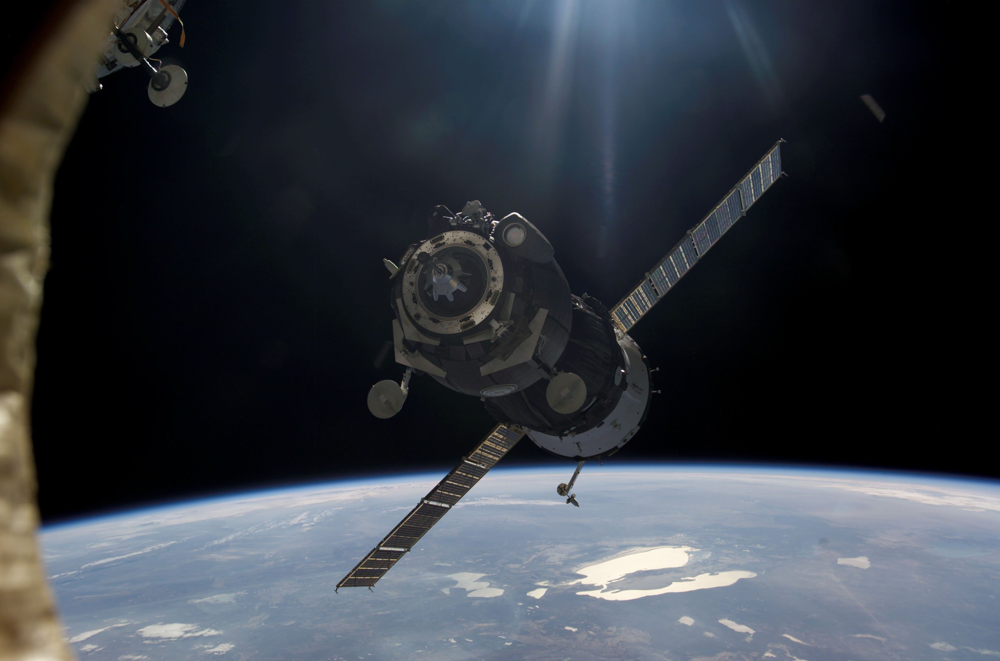

Electronics in Space
Written by Jashn Agarwal ..... 13 December 2024
For the past 70 years, humanity has been driven by an ambition to explore the vast expanse of space. We are motivated by the desire to unravel the mysteries of the cosmos and deepen our understanding of the universe, and through this, we have developed many innovative technologies and strategies to turn this vision into reality. However, with development came problems—some of the most fundamental of which being exactly how the complex electronics and circuitry required within our shuttles and satellites were going to survive the dreadful conditions in outer space.
The challenges electronics face in space are extreme—more so than any electronics may face on Earth. A primary cause for this is the thing that, ironically, allows us to live—the Sun. The main sequence star, lying at the centre of the solar system we call home, emits 10% ultraviolet waves out of its 1400 W/m^2. This is electromagnetic radiation that is ionising—that is, it has enough energy to knock electrons out of their orbits. The electrical circuits that we rely upon in space depend on the movement of these very electrons for them to work, so their ionisation can at best lead to a small soft error or glitch, or at worse have catastrophic knock-on effects on the rest of the system. If a charged particle strikes a sensitive node in a processor, such as a transistor, memory, or a part of the microprocessor, a single-event upset occurs—this can also lead to bugs or glitches. In large enough doses, high radiation flux can change the logical states of flip-flops and memory cells. Alternatively, being struck by neutrons, protons, alpha particles, or gamma photons can change the arrangement of atoms in the crystal lattice of the component, causing long-lasting damage to parts such as semiconductors or recombinant centres.
The average temperature in space is roughly -270℃; the lowest ever recorded naturally on earth was only -88. This frigidity can lead to the expansion of the metals within components and thus malfunctions or them becoming brittle, which can lead to even the destruction of the component itself. The chilliness also can lead to increased resistances within components—something highly dangerous in a circuit where the current needs to be at a precise value, as often required on a space station or in a satellite. Extreme cold causes lithium-ion batteries to deplete quickly, which can lead to insufficient power for the circuit and a malfunction. In stark contrast, a space object is subject to blazing temperatures when directly exposed to the sun. These scorching conditions can lead to the components melting and, obviously, therefore being rendered unable to work.
So we can see that there are clearly a multitude of problems that make it incredibly difficult for us to make sure our electronics work in space. Yet if we were still facing them, the CanSat project probably wouldn’t be a thing. So, how did we overcome them?
To overcome the tremendous amounts of radiation emitted by the sun, rather than using the traditional semiconductor wafer, the chips are manufactured on insulating substrates such as silicon on sapphire. On a more logical level, programs can be written to detect when such bugs and seemingly random state switches occur and hence mitigate any effects of the ionisation. This is a part of programming known as error-correcting code memory. One way of implementing this is with redundancy—for example, using multiple microprocessors on the same task and comparing their answers, with the different answer being excluded. This can be extended to even shutting down a microprocessor if its answer is consistently different from the others’. On a more basic level, shielding the electronics stops particles or radiation from reaching the components themselves. In particular, to prevent the effect of any neutrons on the circuit, a layer of boron may cover it—this is a metal that can absorb neutrons and therefore prevent these particles from interacting with the circuit. In fact, the James Webb Space Telescope in fact had a “tennis court-sized sun shield” (NASA) made of a thin and lightweight material called Kapton, which prevented the effects of radiation and reduced the temperature that the telescope was exposed to by just shy of 300℃.
Although I’ve already mentioned how the JWST could combat the high temperatures, there are other methods to prevent the effects of the extreme cold. For example, extensive testing can be done. We can artificially lower temperatures to—in fact, the lowest such manufactured temperature has been 38 trillionths of a degree above absolute zero—that is, -273.1499962℃. By artificially lowering the temperature in a lab, we can take our circuits and components and see how they would fare in those situations. Thermal control systems and backup heaters are often in place in order for materials and electronics to remain at their designated temperatures. Radioisotopes (nuclear energy), which allow for a long-lasting energy source, typically power these. Large amounts of multi-layered insulation are in place, which both prevent excess heat from entering the spacecraft or too much heat from leaving it, allowing components to function as normal.
Unfortunately, our school, fantastic though it may be, is not available to provide us with a tennis court’s worth of Kapton to prevent our BeanSat and its fungi within from annihilation in the face of the heat from the sun. However, the Beansat team, as engineers, can appreciate the tremendous amounts of pioneering that went into developing these mechanisms, and we can certainly be optimistic that any setbacks faced by aerospace engineers in the future will surely be overcome.